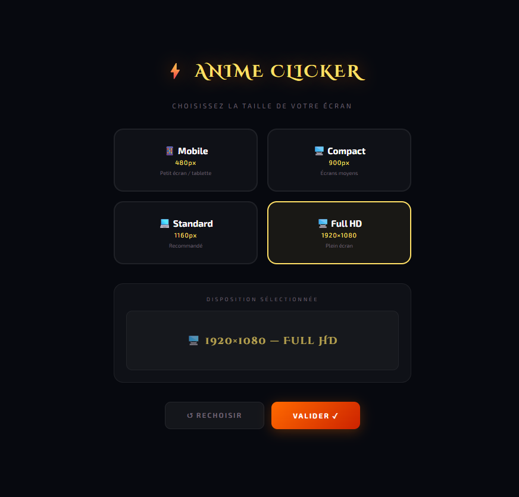

Anime Clicker reprend la formule du clicker — clique pour progresser, débloque des améliorations, laisse tourner en automatique — et l'habille avec les univers d'anime les plus connus. Commence dans l'univers Naruto : accumule du chakra en cliquant, débloque le Kage Bunshin ou le Rasengan pour produire automatiquement, et prépare-toi pour le Mode Sage.
D'autres univers — One Piece, My Hero Academia, et plein d'autres — se débloquent au fil de la progression, chacun avec ses propres améliorations et sa propre ambiance visuelle. Un système de Réincarnation permet de tout relancer contre des bonus permanents une fois qu'un univers est bien avancé.
